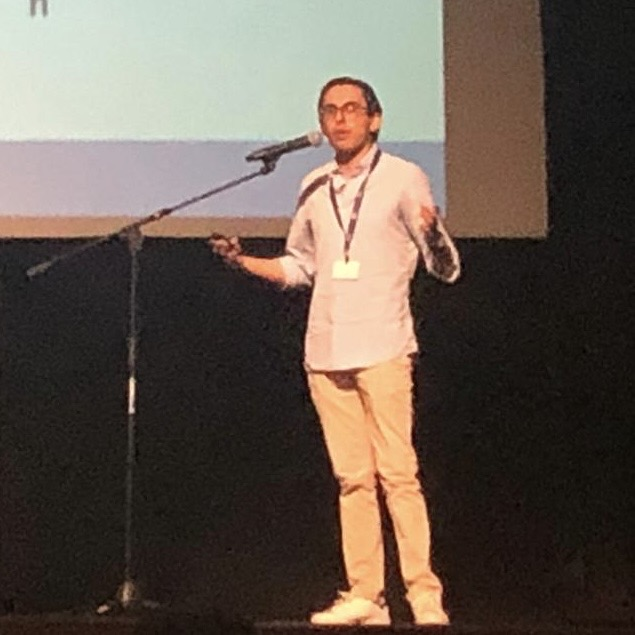

Santiago Marin
About
I am currently a Statistics Ph.D. student at the Australian National University (ANU), working under the supervision of Dr. Anton Westveld, Dr. Bronwyn Loong, and Prof. Michael Martin.
Research
I like to approximate posterior distributions! More precisely, my research interests span from Bayesian methods and theory to computational aspects of Bayesian Analysis, with particular emphasis on fast and reliable posterior samplers, Monte Carlo methods, Bayesian variable selection and shrinkage priors, simulation-based inference, and uncertainty quantification.
I am always open to having a chat or collaborating, especially in the areas of Bayesian methods and computation, so please feel free to contact me. I can best be reached through email. See below for my contact details.
If you ever visit ANU, please pop in and say hi!
Contact
santiago <dot> marinardila <at> anu.edu.au
Australian National University